Introducción
Los mapas son los terrenos en los que se juega, en Valorant cada mapa tiene su propia estética y sus peculiaridades que lo hacen único, el mapa en el que se jugará se selecciona al azar antes de cada partida.
Cuando el juego salió en su fase beta había solo tres mapas: Bind, Heaven y Split, actualmente han salido a lo largo del tiempo un total de seis mapas más.
Ascent
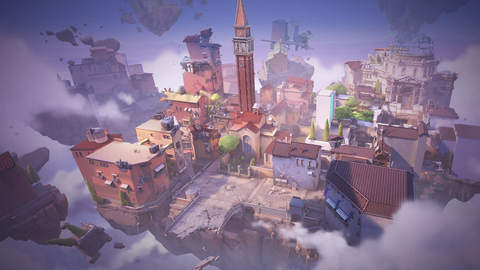
Localización: Italia. Venecia.
Ascent es un mapa que se caracteriza por tener 2 puertas que se pueden abrir y cerrar con una palanca y una gran plaza en el centro
Bind
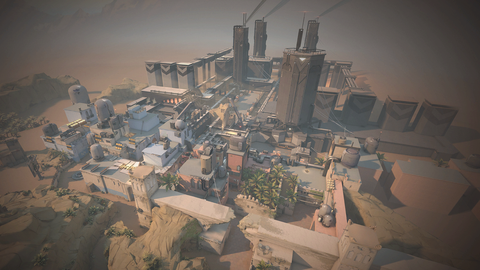
Localización: Marruecos. Rabat.
La peculiaridad del mapa de Bind son sus 2 teletransportadores unidireccionales que agilizan el cambio de posición
Breeze
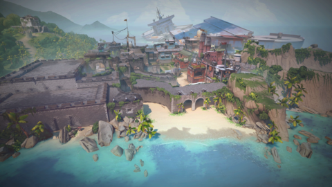
Localización: Isla del Océano Atlántico.
Breeze se caracteriza por ser el mapa más grande y abierto de todos, es una isla entera con un gran centro y amplias zonas de plante

Fracture
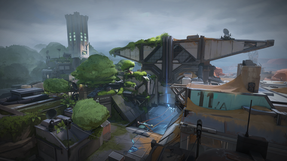
Localización: Estados Unidos. Nuevo México.
Fracture se caracteriza por sus varias formas de entrar a cada una de las zonas de plante y porque está dividido en 2 zonas, bosque y desierto debido a un experimento fallido
 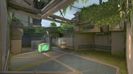
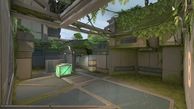
Haven
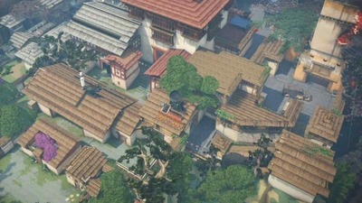
Localización: Bután. Timbu.
La característica principal de Haven es que es un mapa con 3 puntos de plante posibles, al contrario que en el resto de mapas en los que solo hay 2
Icebox
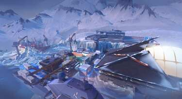
Localización: Rusia. Isla de Bennett.
La peculiaridad de Icebox es su verticalidad, tiene muchas zonas con gran diferencia de altura, en comparacion con los otros mapas que tienen muy pocas
Lotus
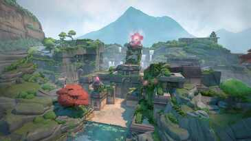
Localización: India. Montañas Sahyadri.
Lotus es otro mapa caracterizado por tener 3 zonas de plante, sin embargo, Lotus tambien tiene 2 puertas que rotan al accionar unos botones, dando más opciones de acceso a las zonas de plante
Pearl
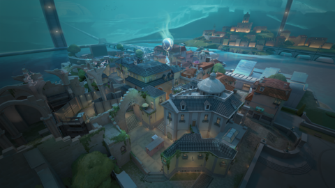
Localización: Portugal. Lisboa.
Pearl no tiene una peculiaridad muy clara, pero podríamos hablar de que su parte central es muy laberíntica, con muchas esquinas y ángulos cerrados
Split
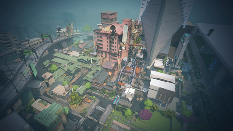
Localización: Japón. Tokio.
En Split las zonas de plante están en desnivel con la zona central del mapa, la cual está más elevada y proporciona una ventaja de altura a los que se posicionen en ella